December 19, 20241 yr comment_981145 Workshop 1 For the first workshop, I tried setting the max speed to fifty which is lower than the original speed. This seemed to make the player move much slower because it was essentially the equivalent of setting the actual speed (two hundred) to fifty because it was clamped. I then tried to remove the rigid body from the player character. I assumed this would prevent the player from colliding with anything because it has no body however, it actually just prevented the player from moving since it had no body to move with. This contrasted interestingly with removing the script to control movement because although the player didn't move without a body it was still animated to walk in the direction of input as opposed to when the control script is removed. Then the player recognises no input whatsoever. I think this is because the animations are still output without a body however there is no object to move, whereas, the control script is whtat recognises and reads the user input, without that no animations or movement can be done since no data is being fed in to instigate the functions. Link to comment https://daf.staffs.ac.uk/topic/73585-jake-astles-a013867/ Report
December 22, 20241 yr Author comment_982349 Workshop 2 For the second workshop, I added some more detail to the level. This was done by using the tilemap to remove the walls before adding more decorations to the ground like bushes, mushrooms and a grassy area. After that, I added some rocks into the ocean before finishing up by creating a path and adding flowers and most rocks into any areas that looked too empty. I also investigated the script that animates the player and allows it to move and learnt that without it no inputs are registered. Additionally, I learnt that the [SerializeField] attribute is used to make private variables accessible to the editor. This is a good way to restrict access to variables without making them public to everyone. 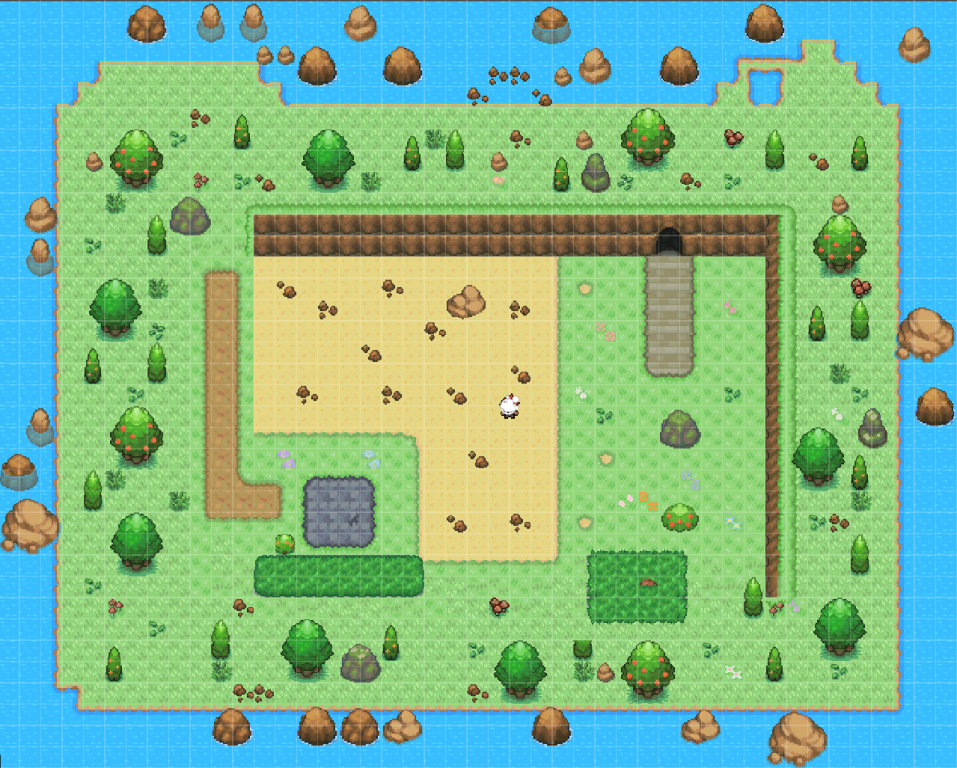 Link to comment https://daf.staffs.ac.uk/topic/73585-jake-astles-a013867/#findComment-982349 Report
December 24, 20241 yr Author comment_982409 Workshop 3 This workshop involved creating a moving object. I found this relatively easy and understood that there were multiple ways of doing this however, some were more efficient and readable than others. I ended up getting the object to collide with the player by using the class "OnCollisionEnter2D". This was a bit different to the other collision class "OnTriggerEnter2D" which involved detecting collision when two objects overlap. After the collision was sorted, I could then add the script as a separate component to the obstacle child. I made this a separate script because it was solely about the collision of the object, as opposed to the way it's being rendered, which is the focus of the other script. Lastly, I added a new script to the character which controlled its health. I learnt a lot about public and private variables, and how they can require getters and setters. I realized that using "[SerialiseField]" makes the variable private to the class and other classes but public specifically to the inspector. It is also useful for clarifying which variable can and cannot be changed by the inspector. After doing this with the current health and the max health I learnt how clamps worked (by keeping a variable's value between two points). I then understood that I needed to use getters and setters so the variables could be accessed by the other scripts. The obstacle ended up becoming a fireball which moved between two points by checking which point it was overlapping with and then swapping its direction focus to the other. It was animated by iterating between three different renders saved to a string array. I thought this brought the fireball to life since the animations made it look as though it were spinning. Here is the script for the obstacle movement and animation. 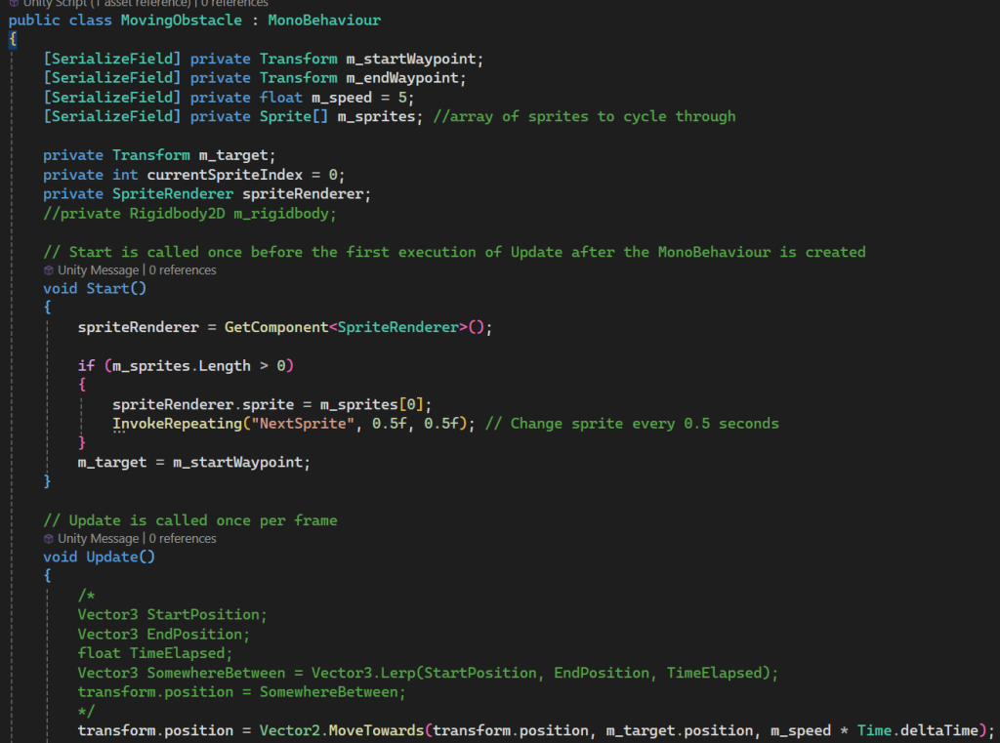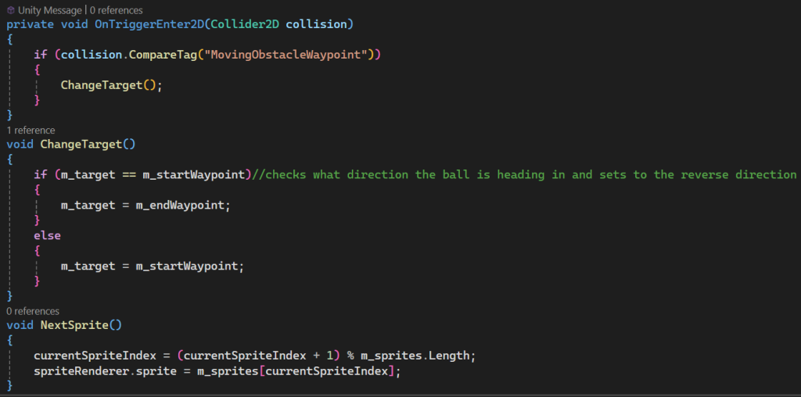 This next image is the damage-dealing script, another component of the obstacle. 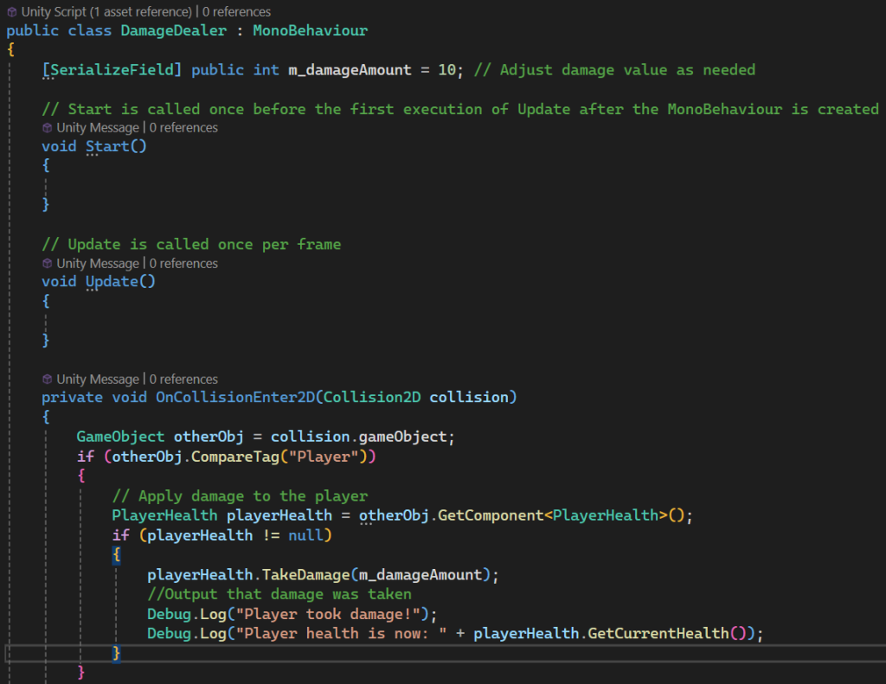 The last script, which is for calculating the player's health, now a component of the player character. 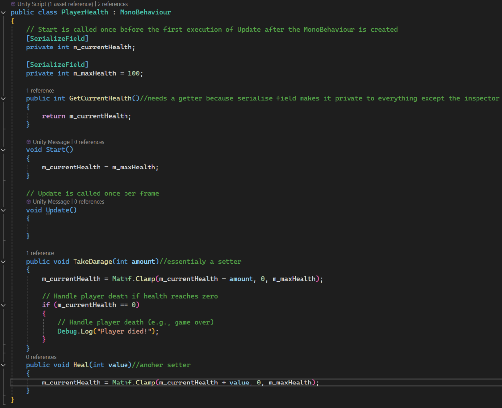 This video demonstrates what has been said so far, the obstacle moves and can interact with the player. I also updated the scenery to be more aesthetically pleasing and added more rocks/bushes etcetera. The only thing not yet added is a system which ends the game upon death. This will be done in the next tutorial I assume. Edited December 24, 20241 yr by Jake Astles Link to comment https://daf.staffs.ac.uk/topic/73585-jake-astles-a013867/#findComment-982409 Report
January 3, 20251 yr Author comment_982826 Workshop 4 I added a few things to improve the bullet and the firing system vastly in this workshop. Using a fire point and some new code I got the bullet to be spawn at a set distance from the character. A new variable called last_direction grabs the direction the player was last facing Link to comment https://daf.staffs.ac.uk/topic/73585-jake-astles-a013867/#findComment-982826 Report
January 5, 20251 yr Author comment_982911 and uses it to spawn the bullet at the fire point but using the rotation of the player. I also added a fire timeout by counting seconds (using Time.time) each time the player starts holding the mouse. If the amount of seconds is greater than the current amount of seconds plus the fire rate (in this case two) then the bullet gets spawned. This is so the bullets are spread out and don't become a long stream of damage. 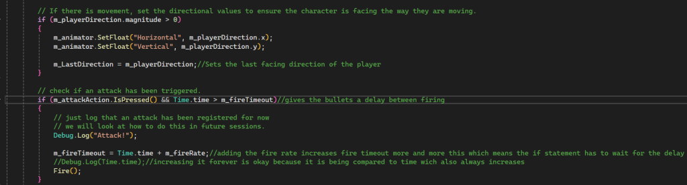 Additionally, I changed the bullet sprite to look more like a silver bullet. However, this became difficult because the sprite had to be rotated depending on the direction in which the player was looking. The way that the bullet moves, using AddForce, is useful because it makes the speed more dynamic which I think will be useful in the future if I need to make different bullet types. 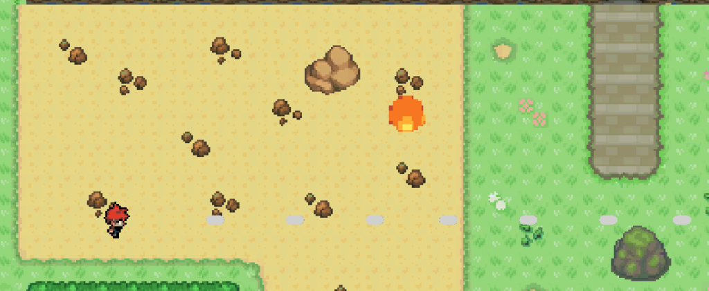 The bullets also get destroyed on collision, they cannot collide with the player, and only objects, because of the tag system I implemented. Lastly, I had an extra script added so the bullet gets destroyed if you haven't seen it on screen for five seconds. This is good because it vastly optimises the bullets in terms of performance since they can be spawned forever without causing a memory leak now. It was a surprisingly simple function as unity already has a class that identifies objects which are off-camera. 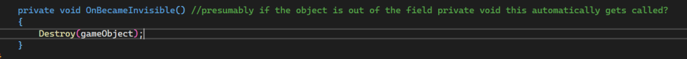 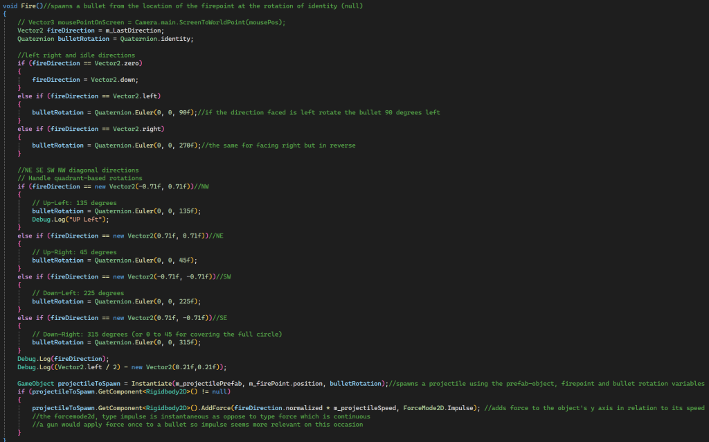 Link to comment https://daf.staffs.ac.uk/topic/73585-jake-astles-a013867/#findComment-982911 Report
January 8, 20251 yr Author comment_984718 Workshop 5 In this workshop, I built the game's UI. I did this by adding buttons using Unity's UI toolkit. I then added in a score label before using the Text Mesh Pro to adjust the text. After that, I added a score system so the script could be saved to that game object before being applied to the button's OnClick event. I practised making the score button and a label that updates without any public variables and then tried to do it with private variables instead. This was harder because I decided to implement some validation checks before the values were assigned. 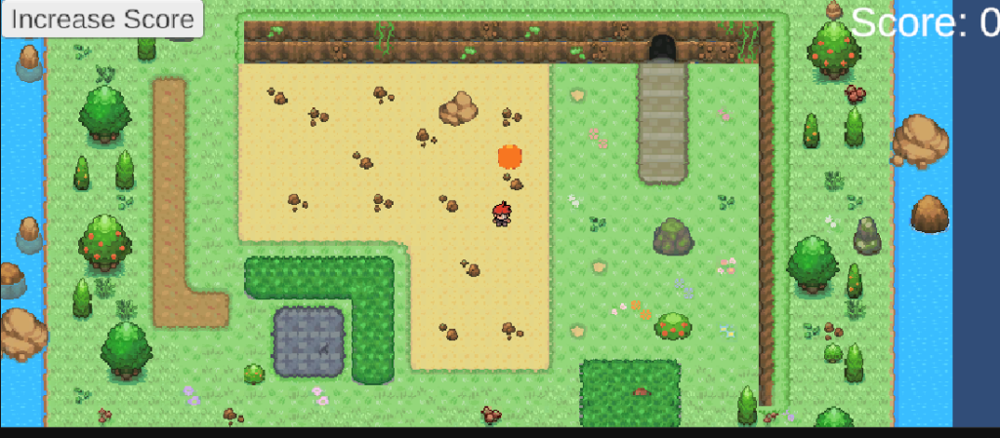 Additionally, I created a main menu scene with two buttons. This was relatively easy after I figured out how the event system worked and how I could apply a script to a game object so that it could be used on a button. This didn't work initially until I figured out you needed to add both scenes to the scene list in the build profile settings so that the load scene function worked. Screen Recording 2025-01-08 220326.mp4Unavailable Link to comment https://daf.staffs.ac.uk/topic/73585-jake-astles-a013867/#findComment-984718 Report
January 28, 20251 yr Staff comment_998006 Formative Feedback Given the absence of a formative post, little feedback can be given about the mechanics that you are wanting to implement for your game. It is good to see that you are doing regular forum posts when you do work on your projects but you should not be posting code on your forum thread, for future posts please do not post any code. Link to comment https://daf.staffs.ac.uk/topic/73585-jake-astles-a013867/#findComment-998006 Report
February 7, 20251 yr Author comment_1003096 Week 4 This week I finished adding the animations to two different enemies. Initially, I had it so one of the enemies just followed the player no matter what and didn't rotate or change animation at all. This then evolved to the enemy constantly jumping up and down (or walking in the case of the other enemy). Eventually, I got the enemy to follow the player and needed to have it so they flipped their x-rotation to face them. This was all done with the FSM (finite state machine) animator and an animation blend tree in Unity's "animator". The enemies were controlled with a C# script. This is what set the target for them to follow and controlled the direction the sprite was facing. The navmesh only worked because of a third-party plugin. This allowed all of the 2D navmesh components and navmesh volumes to be utilised. To get the navmesh volume to work you had to have a navmesh source component component added, which could then be baked to create a navmesh zone. This then allowed enemies with the navmesh agent component to function and recognise walls and lakes etcetera, so they could path-find to the set target. Additionally, I added a roll function. This was a separate set of animations which had to be triggered via the spacebar. This changed a parameter in the FSM animation area which then allowed the roll blend tree to be activated. This blend tree is useful because it plays a different animation depending on the direction the player is heading. Terrible Video Displaying Enemy Pathfinding and Animations.mp4Unavailable Link to comment https://daf.staffs.ac.uk/topic/73585-jake-astles-a013867/#findComment-1003096 Report
February 16, 20251 yr Author comment_1009250 Week 5 This week I tested out creating materials in a Unity 3D project. I did this using a free asset pack I downloaded and a lit shader graph to customise the material. Firstly I set up one basic material by using all of the different files to apply different properties e.g. one texture gave the material a metallic look, another gave it a normal map etc.... This was done by applying the different types of textures to different nodes in the shader graph. When this was done, I learnt how to set up parameters for these textures so different aspects could be changed to affect the overall look and feel of the entire material. For example, one of the first textures I gave a parameter was the base colour. After doing this I could then make the material into a prefab and create different coloured instances of the same material that now look different and are easy to change, without having to go into the shader graph. 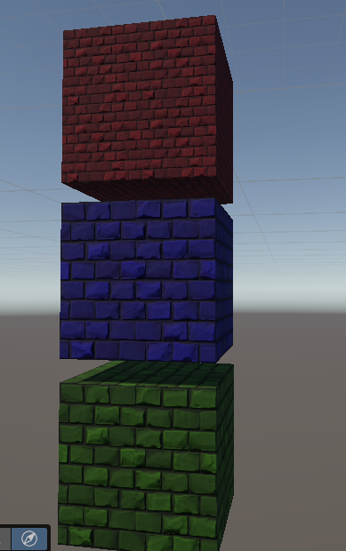 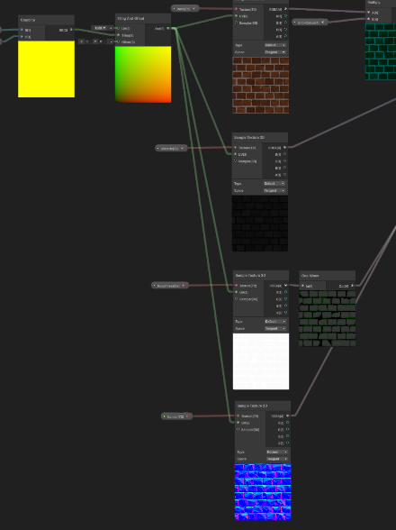 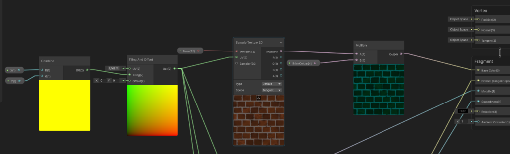 Link to comment https://daf.staffs.ac.uk/topic/73585-jake-astles-a013867/#findComment-1009250 Report
February 16, 20251 yr Author comment_1009498 Week 5 Part 2 This week I made some particle effects using the Shuriken particle system. Firstly, I created an explosion particle effect. This was relatively simple as the basic emitter was already close to an explosion. I just had to change the velocity and timing of the bursts. Next, I made a dust particle effect. This involved spawning particles slowly and randomly over a large area. This particle effect would loop infinitely to add atmosphere to the game. After that, I made a fairy particle effect. This was extremely similar to the dust particle effect however, the particle's size and movement was more random. Additionally, I added in various smoke effects to make bullet collisions and the campfire seem more realistic. I'm unsure if I will use these, however, since I want the starting area to be plain and simple, not congested with smoke. Also, after testing the game I found the most of the time the bullets would be colliding with an enemy outside of your light radius thus, making spawning particles useless since you would hardly see them. 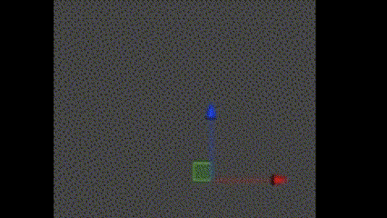 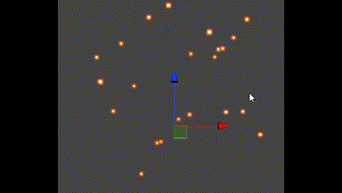 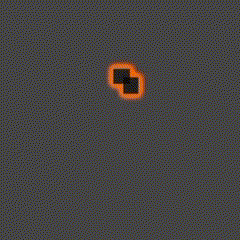 Edited February 17, 20251 yr by Jake Astles Link to comment https://daf.staffs.ac.uk/topic/73585-jake-astles-a013867/#findComment-1009498 Report
February 17, 20251 yr Author comment_1009773 Week 6 This week I added lighting into the game. The torch that I made in the workshop gave me the idea to make the game a horror game where enemies would chase you that you cannot clearly see. I decided in this horror game there would be twenty objectives to collect and more enemies spawn to attack you each time you reach a certain collection threshold. So I turned off the sun and made it flash whenever an object is collected so the player can catch a glimpse of where they may want to head next and any enemies they may want to avoid. Additionally, the campfire has a light to give the player a sense of direction and to make use of the camera lens adjustment I made, using the distortion volume. Lastly, I gave the enemies a light and made part of the torch red. The red part of the torch is a separate object which shrinks and gets brighter the lower the health of the player. Therefore, the user will have a visual inidcator as to how much health they have left. The player also has a slight aura, created by a very dim light, so you can see the walk and roll animations/sprite completely; this helps avoid getting confused with what you're colliding with. 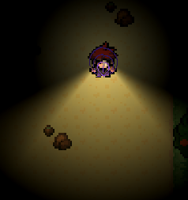 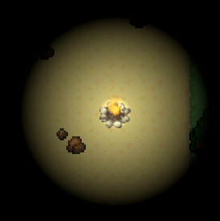 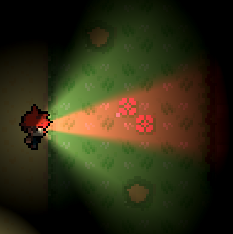 The player on the lowest health, and so, the smallest and brightest red light has appeared. 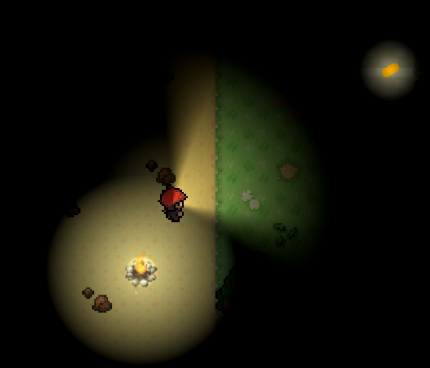 The player after firing a bullet which has a light attached so the user knows when it collides with something. 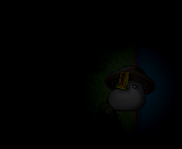 An enemy with a very dim light attached to improve visibility and spookiness. 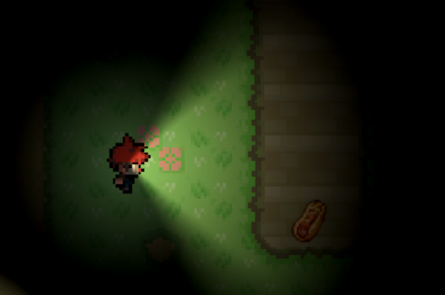 A collectable which contributes to the overall score (20 required to win). 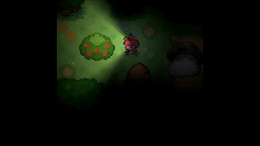 A short video displaying the damage mask flashing up it slices into the player whenever the enemy attacks. It's supposed to look like tentacles. Edited February 17, 20251 yr by Jake Astles Link to comment https://daf.staffs.ac.uk/topic/73585-jake-astles-a013867/#findComment-1009773 Report
February 17, 20251 yr Author comment_1009804 Week 6 Part 2 In this section, I expanded the map and added a new island. This took a while as I had many different layers to get to work. The player didn't fit into some of the one-tile gaps I created so I had to shrink the box collider it uses. Overall the map ended up looking like this. Additionally, I had to expand the navmesh that I had already placed by re-baking it. 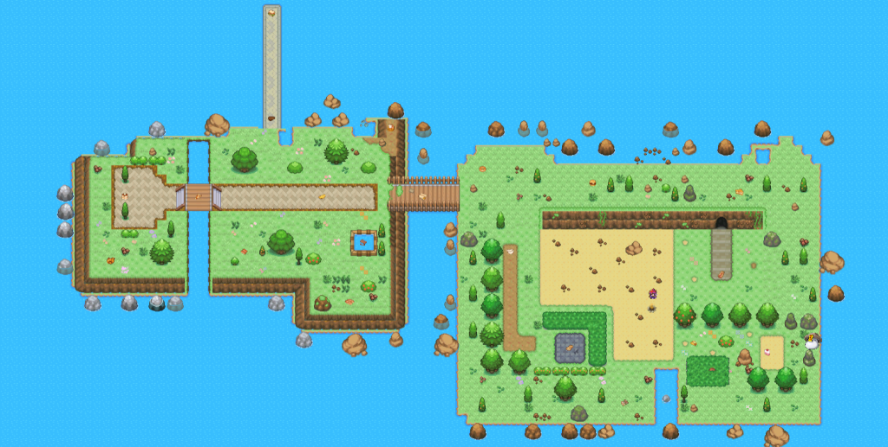 Link to comment https://daf.staffs.ac.uk/topic/73585-jake-astles-a013867/#findComment-1009804 Report
February 18, 20251 yr Author comment_1011731 Final Weeks (7&8) and Submission For these past weeks, I've been finalising the game and polishing the mechanics to ensure that everything is balanced and playable. The game now includes the following list of mechanics: collectables, enemies, lighting (as mentioned in the week 6 post), a scoring system, a level timer and a moving obstacle/trap on the final bridge. The collectables mechanic involves collecting twenty objects before you win the game. Collecting an object updates the score label and flashes the sun for one second to display any nearby collectables/enemies. This was relatively easy to create as it just involved creating a new script and attaching one to every collectable, along with a circle collider and a sprite renderer. This script then updates the collectable UI script on the collectable manager. The collectable manager is then referenced by the score label, a new instance of the collectable manager is also used on the respawn screen and win screen to manage the respawn score and win time, respectively. Lastly, the win screen is managed through the collectable manager and its script. This is done by checking if the maximum score is reached and then loading the win screen. This is done every time the score is set. The enemies mechanic involves having more and more enemies spawn at every collection threshold for the collectables. These are 5, 10 15 and 19, for the final enemy. This is also done through the collection manager and is done whenever the score is set, through the score set function. Enemies have a radius which is used to determine which state they are in. The states are: Idle, Attacking, Moving and Stunned. The Idle state prevents the enemy from moving and is active by default, or when the player exits their detection radius. The Attacking state becomes active when the player is in the radius and is a certain distance from the actual enemy. The Moving state becomes active when the player enters the radius and lastly, the stunned state becomes active when a bullet collides with the enemy. The enemies use a navmesh to move and are prevented from walking into walls and water because of it. The "EnemyController" script attached to them is what allows them to do these things. It also controls the direction the sprite is facing depending on their X velocity and the delays for attacking and being stunned. This script works in tandem with the "EnemyHealth" script which controls the amount of health the enemy has and when they die/take damage. This script was never actually used since I ended up making it so the enemies cannot be killed but only stunned. However, it exists and is attached to both of the enemy prefabs, ready to be used if I ever decide to add more features to the game. Lastly, players can dodge enemy attacks by rolling. Before any attack, the player controller script is referenced to see if the player is rolling. If they are then the attack is never instigated. I tried to make it so that all of the separate scripts access each other securely. This is done with getters and setters so the base variables themselves can be private. I thought this to be a good practice to increase security and a good habit to get into. It made accessing variables better because I could customise the access levels between and within multiple scripts. For example, I could have a private variable with a public getter and a private setter, meaning the only variables within the script could change the value but any script could read it. The lighting is the largest mechanic in the entire game. It creates the atmosphere, and without it, the game would be very boring. This is controlled with only two scripts. The collectable's script, which flashes the sun upon collection of an object and the "TopDownCharacterController" script, which controls the main torch. The rotation is applied by using the player's last facing direction and then converting it into an angle then checking if that direction is different to the actual direction they're facing. If it is then the target rotation variable, which the "Quaternion.Slerp()" function uses will be updated using the new angle. The health torch is mainly controlled by the "PlayerHealth" script, which adjusts the intensity and size of the light depending on the amount of health they have remaining. This is designed to give the player a warning they are taking too much damage, have little health left and need to be careful. The health torch is a child of the main torch it follows the same location and rotation. Whenever the player is damaged, depending on the source of that damage a different effect is played. For instance, if the player is hit by the fireball-moving obstacle then they emit a puff of smoke by using the particle system component they have attached. Whereas, if the player is damaged by an enemy then two damage masks are activated. One of them takes a tentacle slice out of the player whilst the other one grows and shrinks twice for one second (both of these are parameters which can be changed). This is done with a third-party plugin called "LeanTween". It was very useful in this case since it allowed the second mask to grow and shrink smoothly, just by using two different functions. The bullet system is fairly simple, it is controlled by the same "TopDownCharacterController" as a few other aforementioned mechanics. It spawns a bullet in the direction the player is facing (down by default) and then applies force. This then triggers a delay before the next can be fired. Each bullet has a light making them more visible to players, and so, they know exactly when an enemy (or a wall) is collided with. Enemies also have a dim light so the player can fire at them from afar. If right click is held then the player enters precise-aiming mode. This stops the player from moving and then controls the bullet rotation by referencing the mouse's rotation in relation to the location of the player. This allows the player to be more accurate and shoot backwards etcetera. However, it is designed to be balanced so it's always while the player is standing still. This means enemies can gain ground on you whilst you stun them. The stun effect also does not stack so they cannot be stunned forever (unless bullets are timed perfectly). This becomes more prominent when firing on a group of enemies, where the first ones stunned start to attack you as the others have only just stopped moving. In conclusion, I think all of the mechanics I implemented work fine. The game has: main, respawn, pause and a win menus. Along with, collectables, enemies and an in-depth damage and lighting system. The map is also much larger than the original and implements more tiles and obstacles such as water, river walls and an extra island with more rocks, bridges and a fireball trap/obstacle. I think the game is portfolio-ready because it is polished/balanced and has all of the right features to make it functional and interesting, without being too basic or oversimplified. I may implement bosses with health and a larger map if I continue to work on this game in the future. I have definitely learnt a lot in this module, coming from someone who had barely touched Unity beforehand, to someone who is much more confident with the basics, finding the right functions to use, referencing different objects from different scripts across multiple scenes and building particle and lighting systems in 2D. I can do a lot more things such as, animate players and control those animations effectively (so they don't loop, look smooth and aren't too short/long or overlap). I know blend-trees and state machines because of this, and how animation controllers work and animation clips. I also now understand coroutines and how they can delay different aspects of the game simultaneously to make it more balanced. I know serialized fields and headers as a method to publicly access internal variables in scripts and how different objects and their children work. I know a lot more Unity-specific classes and libraries and can now package, manage and build with multiple scenes. Lastly, I know a lot more about 2D lighting and 2D object navigation etcetera. After this video, I improved the way that enemies follow the player since they were walking over water and weren't going idle. They now stop once the player exits their radius and are forced to cross the bridges properly. I also added a section in displaying the pause menu so the win time won't match the video time. Screen Recording 2025-02-17 225821.mp4Unavailable This is a improved video displaying the damaged animation mask. Edited February 18, 20251 yr by Jake Astles Added the last few paragraphs and changed a few sentences for grammar and clarity Link to comment https://daf.staffs.ac.uk/topic/73585-jake-astles-a013867/#findComment-1011731 Report

")